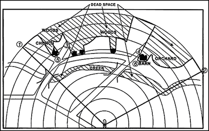

UNAUTHORIZED USE WILL RESULT IN DISCIPLINARY ACTION.
Phase 1 | Role and Purpose of Sniping
Role and Purpose of Sniping
The purpose of ARF sniping operations is to provide precision observation, intelligence
gathering, and
controlled
engagement capability in support of Republic forces.
ARF snipers function as force multipliers. Their presence alone can influence enemy
movement,
disrupt
formations, and
provide a tactical advantage to allied units.
On top of that they can:
Kill
Halt enemy movement
Deny enemy action
Reduce morale to fight
In one single Bullet
Therefore it is of the utmost importance for the enemy to locate and destroy you as
quickly as possible
to reduce
casualties.
This makes stealth one of the most important principles to keep you and your squad
alive.
Because 9 times out of 10 you don’t have the numerical superiority as a sniper squad.
Phase 2 | Core Definitions and Concepts
Core Definitions and ConceptsThis phase will go over multiple definitions and military concepts in the world of sniping. In this phase you will learn many tactics. This phase will go over some of the most important tactics needed to become a full fledged ARF sniper.
2-1 DEAD GROUND
Definition:
Dead ground refers to any area of terrain that cannot be directly observed from a specific position due to obstacles such as hills, walls, structures, or elevation changes.
Tactical Significance
Advantages:
➢ Provides concealed movement routes
➢ Allows repositioning without being detected
➢ Useful for avoiding enemy observation
Disadvantages:
➢ Enemies can hide or move undetected
➢ Limits your ability to gather intelligence
➢ Can create gaps in overwatch coverage You should be aware of dead ground at all times as it allows enemies to sneak up on you.
2-2 INTERVISIBILITY
Intervisibility is the condition in which two positions are visible to each other without obstruction. Intervisibility occurs when both you and an opposing position have a direct line of sight to one another. If you can see the enemy, and they can see you and intervisibility exists.
Advantages:
➢ Enables direct observation of enemy positions
➢ Allows effective overwatch and reporting
➢ Improves situational awareness
Disadvantages:
➢ Increases risk of detection and exposure
➢ Makes your position more predictable
➢ Reduces survivability if stationary
Snipers should: Minimize unnecessary intervisibility. Use concealment to reduce detection. Control when and how they are visible
2-3 CONTOURING
Contouring is the act of moving along the natural shape (contour) of terrain, typically at the same elevation, rather than moving directly up or down slopes. Instead of moving straight over a hill or into a low area, contouring involves traveling around the side of terrain features. This allows a sniper to maintain a consistent elevation while reducing exposure to observers.
Advantages:
➢ Reduces exposure to enemy observation
➢ Maintains a stable field of view
➢ Allows controlled and predictable movement
➢ Avoids skyline exposure (silhouetting)
Disadvantages:
➢ Can take longer than direct routes
➢ May limit speed of repositioning
➢ Requires awareness of terrain layout
Practical Example
Rather than walking over the top of a hill (where you are easily seen), a sniper moves around the side of the hill, staying below the ridgeline so you can’t be seen against the background of the sky.
2-3 COVERED APPROACH ROUTES
Covered approach routes means using the covered approach routes via the use of dead ground. If you are in the dead ground the enemy cannot see you so when pushing so when you are pushing enemies, villages, towns or bases make sure you utilize valleys and ditches. Remain in the dead ground until the last possible moment and engage the moment you get out of dead ground.
Advantages:
➢ Enables safe positioning
➢ Reduces likelihood of detection
Disadvantages:
➢ May limit movement speed
➢ Can be predictable if overused
Practical Example
A sniper moves between 2 buildings. Instead of crossing through an open street they move behind walls and through low ground areas. This path is a covered approach route
2-4 LOOPHOLE SHOOTING
Loophole shooting is when the shooter shoots the target by means of a hole made on a covered or concealed location in order to reduce the visibility of the sniper.
Advantages:
➢ Minimizes exposure to enemy fire.
➢ Makes detection significantly harder (In case of real players, I.e Lore actors)
➢ Allows safe engagement from strong cover.
➢ Effective ambush and overwatch.
Disadvantages:
➢ Limited field of view.
➢ Harder to track moving targets.
➢ Position can become predicable
➢ Reduced awareness of surroundings.
Practical example
You sit in overwatch atop a building overlooking a road, you then identify a small crack in the broken wall facing the street (This is your loophole), you stay a few steps back from the crack so only your rifle can be seen. You wait for your designated target to pause in your line of sight. You then take a few controlled shots through the loophole so as to not expose your position.
2-5 One below movement
Always try to keep your movement as stealthy as possible. That is what the one below method is for. If you think you can stay stealthy whilst sprinting, walk. If you think you can get away with walking crouch, if you think you can get away with crouching prone, and if you think you can get away with proning, don't even try. This means the sniper continuously selects a lower profile option than what seems acceptable.
Advantages:
➢ Significantly reduces detection risk
➢ Maintains concealment for longer periods
➢ Enhances survivability and effectiveness
Disadvantages:
➢ Slower movement speed
➢ Requires patience and discipline
➢ May delay repositioning
